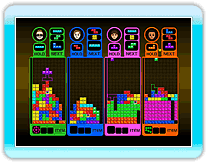
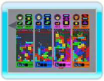
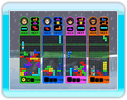
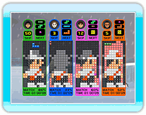
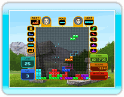
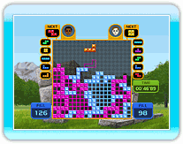

基本的な対戦ルールのテトリスです。ライバルや

COM
とラインを消し合い、自分以外のプレイヤーを全て行動不能
(ゲームオーバー)
にすれば勝ち、ライバルが先に行動不能になっても勝ちとなります。ラインを消すと、消したライン数に応じて相手のフィールドにペナルティブロックを送ることができます。
基本的なルールは「のぼってブロック」と同じです。ライバルより先にゴールすると勝ち、ライバルが先に行動不能になっても勝ちとなります。チェックポイントを通るたびに「ラインキック」が１つ補充されます。
指定された緑色のラインを消して行きます。ライン上でテトリミノを消すと、背後のラインも一緒に消えます。ライバルより先に全てのラインを消せば勝ち、ライバルが先に行動不能になっても勝ちとなります。チームを組んでいる場合、チームメイトがラインを消すと、同じ場所にある自分のラインも消えます。
基本的なルールは「えあわせブロック」と同じです。ゲーム終了時にライバルより完成度が高ければ勝ち、100％の完成度を出したプレイヤーはその時点で勝ちとなります。
２人プレイ専用です。通常の倍の横幅
(20ブロック)
を持つフィールドで、２人が協力してプレイします。１Ｐと２Ｐでエントリーされるテトリミノの種類は異なりますが、基本的なルールは通常のテトリスと同じです。HOLD
は１Ｐと２Ｐで共用です。
２人プレイ専用です。通常の倍の横幅
(20ブロック)
を持つフィールドで対決します。通常のテトリスとはルールが大きく異なり、テトリミノで囲んだスペースの広さ
(テトリミノ自体もスペースとしてカウント)
を競います。プレイヤーは１手ずつ交互にテトリミノを操作して行きます。スペースは最後にそのスペースを閉じた方のものとなり、より広いスペースを所有する方が勝ちとなります。